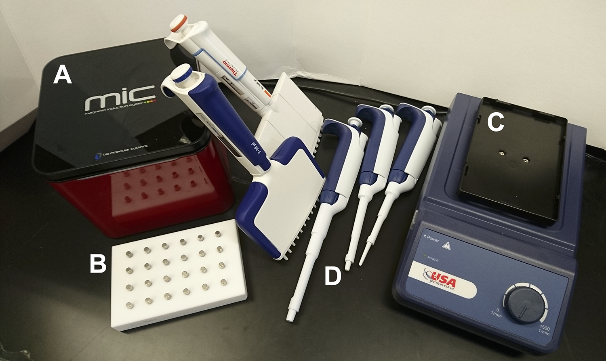
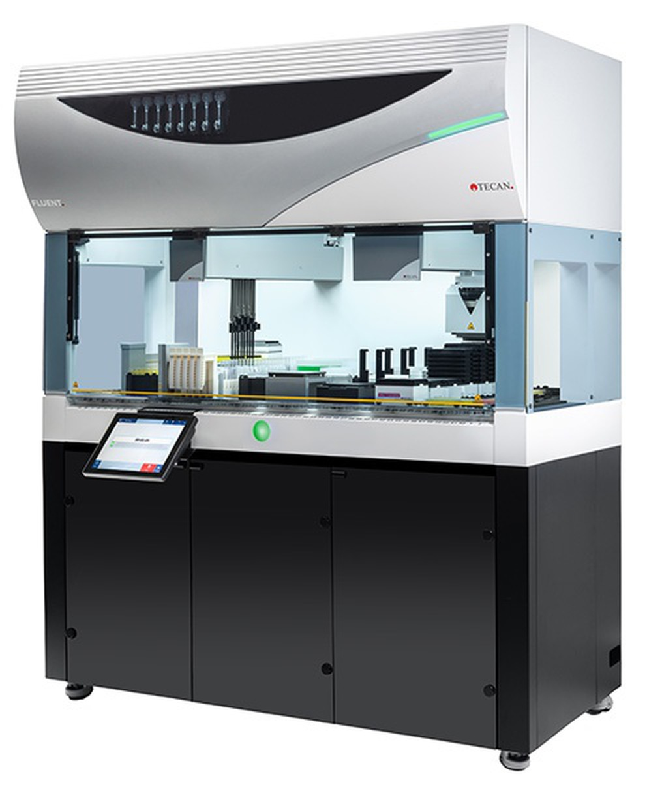
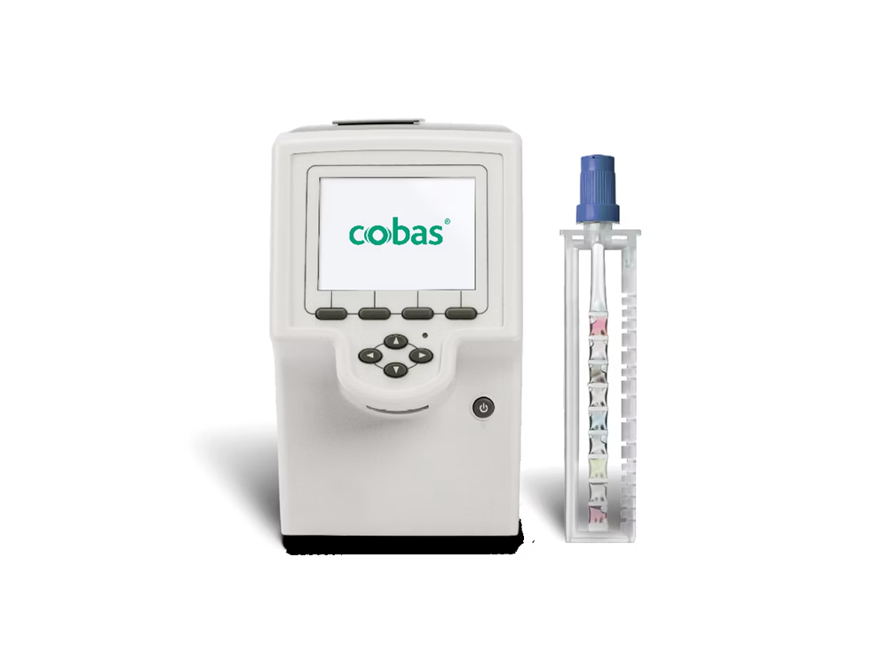
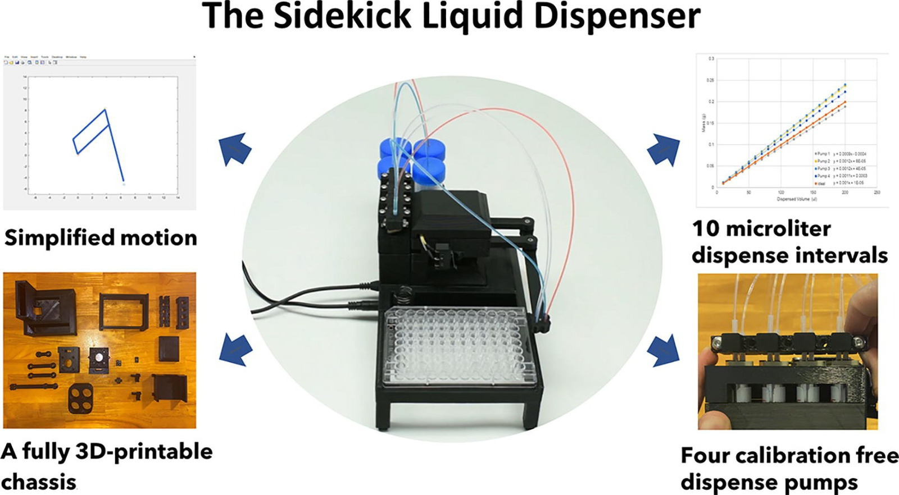

Design of an Automated and Portable Liquid Dispensing
System in the µL scale for Biological Applications
Bringing sample preparation to the point of care
Sirio Vittorio Feltrin
MSc thesis defense · DTU Bioengineering · NaBIS
Design of an Automated and Portable Liquid Dispensing System in the µL scale for Biological Applications
Bringing sample preparation to the point of care
Sirio Vittorio Feltrin
Supervisors Maria Dimaki · Winnie Edith Svendsen · Lars Hvam · 28 September 2026
A test that takes a day comes too late.
standard molecular testing, the hospital’s own lab>26 h
< 3 h
one study, same hospital, same patients · Collier et al. 2020
The test can travel to the gate. The sample preparation cannot yet.
Contents
Part I
Background, Requirements and Methods
the gap · requirements and modules · engineering with AI
Part II
The modules
pump · alignment · nozzle · interface · storage
Part III-A
The machine
electronics · integration · validation
Demo
Live demo
the machine runs, here, for five minutes
Part III-B
Discussion & Outlook
Closing
Part I
Background, Requirements and Methods.
Why this machine exists, what it has to do, and how I worked.
Sample preparation is what turns a raw swab into something a test can read.
Locked inside
Separated from everything else
And the chemistry washed out
Nearly every step is a liquid.
No instrument today is precise, portable, unattended and open to any protocol at once.
precise across rangeportableunattendedany protocolprice
manual pipettinghand pipettes~$1kkit, 1–1000 µL
laboratory systemsTecan Fluent$25–80kused
integrated platformsRoche cobas liat$11k$100 per test
open sourceSidekick, Keesey 2022$710build cost
what the field needs




Carlier et al. 2022 · Tecan · Roche · Keesey et al. 2022 (CC BY)
One machine engineered for generalized sample preparation, grounded in five field protocols.
🧬clinical and veterinarythe PANPOC protocol🌱plant and field molecular💧water chemistry🌾agriculture🌲soil chemistry
5 – 1000 µLper liquid
up to 6 liquids
into tens of 1.5 and 2 mL tubes
The machine must dose 5 to 1000 µL of six liquids into forty tubes, on its own.
Design a portable liquid dispenser capable of delivering 5–1000 µL of up to six reagents across tens of 1.5 mL and 2 mL tubes, unattended, at a precision equal or superior to manual pipetting, operated at the point of need by non-specialist personnel.
within ±10 % of target5 to 1000 µLsix reagentstens of tubesno hands after setuplearnable in ten minutes
then ranked onperformancemaintenanceautomationportabilitycontaminationsafetyfeasibilitysustainability
The machine is split up into 8 modules, connected by liquid transfers and control signals.
* the 5 µL lower bound is not yet validated, but is expected to pass
Unattended runmet
Trainingnot tested
Operating envelopeexcluded
Portabilitypartly met
Cross-contaminationby design
Windexcluded
Cleanabilityexcluded
Fluid pathsmet
Spillagepartly met
Operator exposurepartly met
Electrical safetyexcluded
Enclosure
Cleanable materials
Circuit Board (PCB)
The machine is operational and ready to run live.
nozzle close-up
motor spinning
timelapse run
battery run outdoors
Live Demo
sirsirio.github.io/thesis-tools
Part III-B
Discussion and Outlook.
The prototype proves the concept, not a finished instrument.
Channels built2 of 6
Liquids dispensedwater, dye
5 µL lower boundnot verified
Untrained usersnone
Test oneThe PANPOC protocol, run with its real reagents.Test twoA first-time user handling racks, tubes, lids and bottles.
Depth and breadth in prototyping: the pump and alignment modules.
What it buysWhat it costsDepthBreadth
Brings a concept to the precision it can reach
Commits to a shape before its alternatives are built
Compares alternatives as hardware, not on paper
A quick build may compare two builds, not two mechanisms
Pump — breadth and depth3 concepts, 4 builds
Linear pinchMarius’s, built
Syringebenchmarked
4 builds
Peristalticmine, chosen
Alignment — breadth on paper
1 of about 50 concepts built
The pump model was not tested
Target5.0 µL
Delivered3.94 / 4.10 µL
±0.10 mm printing makes a real rotor sweep worth running
The next prototype starts from the modules, in the order their geometry depends.
01The fluidic corePump · Storage · Nozzle02Lid opener03Sample rack04Alignment05Electronics06EnclosureCo-developed until the fluidic interfaces are stableThe last manual step, settled before the rack is frozenStronger motors, closed-loop step-loss detectionOne board, 24 V, charge sensingDesigned last, because it inherits everything
A prepared sample is not an answer: pair the dispenser with a reader.
The dispenser · builtthe sample
The readerproposed, not builtOne detector bay
Fluorescence
the answer, on the spot
Absorbancecolour and turbidityLateral flowstrip readerElectrochemicalThe machine prepares the sample. It performs no detection of its own.The missing half is a companion reader — proposed here, not built.One bay, interchangeable detector modules: the reader is whatever is docked in it.A code on the kit sets up both instruments — the operator loads and scans instead of configuring.
The arrivals hall, again.
Thank you. Questions?
Thank you.
SupervisorsMaria DimakiWinnie Edith SvendsenLars HvamAndMarius Dornonville de la Cour SchillerPulkit Saluja
Questions?
Bringing the lab to the sample often still requires pipetting and an expert.
Carlier et al. 2022 · CC BY 4.0
Only a peristaltic pump keeps the liquid inside a tube you can throw away.
machine wetted
The plunger face and the bore hold the reagent.
machine wetted
So do the diaphragm and both check valve leaflets.
tube only
Only the tube touches the liquid, and the tube is thrown away.
The AI was the foundation of the digital work; the physical work stayed in my hands.
by hand
Decisive forLiterature researchExperimental protocolsMeasurement analysisFirmwareTechnical specificationsThe boundaryPrintingAssemblyWiringLab testingand the CAD assembly it could not build
“Without AI embedded across the entire engineering workflow, completing an integrated prototype and this depth of experimental validation within a master’s thesis timeline would not have been possible.”
Six readouts could fit a portable reader, and each one is a different bill of hardware.
ReadoutLight inFilterDetectorHeatAlso needs
Fluorescenceblue LEDtwo filtersphotodiode65 °C blockdark box
ColorimetricLEDs—photodiode65 °C block—
Turbidimetry650 nm LED—photodiode65 °C block—
Lateral flowwhite LED—camera—strip holder
Electrochemical——potentiostat—printed strip
Borderline · more box than a portable module has
Chemiluminescencethe label—PMT or SiPM—light-tight box
The dispenser assembles the reaction; the reader is what turns it into a number.
Fluorescence · excite blue, read the green that comes backRT-LAMP · RPA · qPCR · CRISPR
Best sensitivity per euro, and PANPOC’s own assay already works this way. The heater sets the battery, not the optics.
Colorimetric · the pH drops and the mix turns pink to yellowLAMP · gold-bead immunoassays
The cheapest reader that works — but a crude sample can suppress the colour change and read as a false negative.
Turbidimetry · the reaction clouds the tube as it runsLAMP only
Weak, and it reads LAMP and nothing else. It is on the list because the parts are the ones colorimetry already needs.
Lateral flow · read the test line against the control lineimmunoassay strips
No heater at all, the lowest power draw. Its hard part is registering the strip, not the optics — what the alignment module already does.
Electrochemical · binding becomes a current at an electrodeenzyme and binding assays
No optics at all, so light, turbidity and colour stop mattering — arguably the best fit for what this dispenser hands over.
Chemiluminescence and ECL · the label emits its own lightimmunoassay labels
The borderline case: no lamp to power, but it wants a photomultiplier and a genuinely light-tight chamber.
A model gives a reasoned starting point; systematic prototyping is what makes the output dependable.
Derive the dimensions from a model before building, or build many variants and derive the model from the data.
dimensions to start frommeasurements that calibrate the model
Model first
+A reasoned set of dimensions to start from
−Worth only as much as its validation, which needs many builds
Prototypes first
+Measures the real part across a spread of dimensions
−Needs printing precise enough that results reflect the dimensions, not the printer
For the pump I took the model-first path, because choosing rotor diameters and occlusion gaps without a model would have been guesswork.
The model was never experimentally validated. The builds went into getting parts to print as drawn rather than into testing its predictions.
Target5.0 µL
Delivered3.94 / 4.10 µL
±0.10 mm
is how closely a printed part matches its drawing, not how the liquid behaves. That repeatability is what now makes a real sweep of rotor diameters and occlusion gaps worth running.
the v2.3 housing hit its nominal 1.52 mm gap
The two are complementary: the model gives the starting point, a systematic sweep calibrates it, and pumps can then be printed for a chosen volume per stroke.
still open · tube bores other than 0.51 mm · liquids other than water · ten-hour runs with gravimetric checks either side
The volume range was read out of five protocols, not estimated.
Backup
4 of 5protocols work between single-digit microlitres and about one millilitre, on three to six liquids
5 – 1000 µLthe reference protocol alone, across six reagents
5 into 45 µLtwice in succession — precision changes inside one protocol, not only between them
1 kept outthe soil protocol stays in the table as the case that marks where the scope stops
Field
Protocol
Liquids
Range
Clinical, veterinary
Magnetic-bead RNA extraction
6
5 – 1000 µL
Plant molecular
Thermo-osmotic DNA extraction
3
5 – 250 µL
Water chemistry
Colorimetric phosphate assay
3
20 – 600 µL
Agriculture
Lateral-flow immunoassay
6
2.5 – 1000 µL
Soil chemistry
Pipette-tip extraction
2
300 µL – 10 mL
the last row is out of scope on purpose
Forty tubes is a field site’s day, not a laboratory’s.
Backup
40tubes in one unattended load — about 2.5× the reference batch, about 4× a typical portable instrument
55 – 110samples a day across single-operator and staffed field deployments
1000×the gap to centralized capacity — because a deployed unit serves only the samples its own site generates
Deployment
Samples
Basis
Point-of-care devices under development
< 10
per run
Reference protocol prototype
16
per run
Portable nutrient platform, cruise
55
one campaign day
Portable qPCR, malaria surveillance
≈ 60
per day, derived
Staffed mobile laboratory
110
per day, four scientists
Centralized pooled testing hub
> 8000
per day
per-run and per-day figures must not be added
Random error shrinks with chained doses; systematic error never does.
Backup
1 / √nthe random component as a fraction of the delivered volume; the systematic offset never changes
20 aliquotsat 200 µL the random part has fallen to about a fifth; the systematic part is exactly where it started
+11 %the worked instrument ran high at every volume tested, on a 0.1 µL per-aliquot standard deviation
2 limitscorrelated faults break the 1/√n law, and serial dilutions compound multiplicatively
The printer was characterized only after two measurement designs failed.
Backup
2 unknownsshrinkage bars gave one equation for a scale and an offset at once — mathematically unidentifiable
0.23 mmthe single-rotor fit nailed the bearing span and made an internal arc this much too wide
3 ringsconcentric rings decoupled external from internal features; the two slopes differ by over eight standard errors
±0.10 mm95 % prediction interval from 20 to 90 mm; the out-of-sample pump housing agreed within 0.01 mm
external d = 1.0065·target − 0.07 · internal d = target + 0.14
The inline flow sensor fails at exactly the volumes that matter.
Backup
2.78 %CV on ten 100 µL deliveries from a commercial syringe pump — no replicate flagged
22.72 %CV from the same pump at 5 µL; ten of eleven replicates flagged for backflow, one outlier at 2.00 µL
the causefluid compliance and sensor response time distort the signal at microlitre scale, so gravimetry replaced it
Per-stroke volume is a regression slope, not a single weighing.
Backup
10 – 300strokes per calibration line; the per-stroke volume is its slope
5 mgone stroke on the balance, against a 0.1 mg noise floor — a single weighing cannot carry the number
calculatedevaporation corrected on the commanded duration, not wall-clock, so a slow balance reading cannot corrupt it
randomizedfull run-order randomization spreads drift, temperature and tubing fatigue across conditions
residual standard errors are reported instead of R², which sits near unity across wide stroke ranges
The syringe pump was rejected on measured performance, not on preference.
Backup
108dispenses over thirteen conditions and two barrels, on a commercial instrument rather than a home build
+94.3 %delivery error at 1 µL on the 10 mL barrel
−29.0 %at 500 µL on the 20 mL barrel, where the 10 mL barrel was −3.8 %: error scales with bore
68 vs 38category score, the two barrels; the small-volume, slow-flow cell is the weakest on both
Rotary beat the linear pump on hygiene and size after both passed the accuracy gate.
Backup
3485 / 3185weighted totals, rotary against the linear chamber pump
380 of 610of the points rotary gained came from footprint, mass and cleanability alone
30 pointsall the linear pump’s better accuracy and reproducibility were worth: both had cleared the ±10 % gate
check valvesmulti-reagent reciprocating pumping needs an array of them: wetted moving elements, fluid traps, a cleaning burden
Criterion
Weight
Rotary
Linear
Footprint
80
5
3
Lightweight
60
5
3
Cleanable
50
3
1
Low maintenance
70
3
4
Accuracy
10
3
5
Reproducibility
5
3
5
Weighted total
3485
3185
throughput was missing from the historical matrix; it would have widened the margin
Four rollers is the only count that satisfies geometry, backflow and torque at once.
Backup
0.51 mmthe only tested bore feasible from three to twelve rollers; wider bores hit the hub boss, narrower ones run too long
3 failsthree rollers leave the path unoccluded during transitions, opening it to hydrostatic backflow
0.67×torque derating at 12 V and 2000 steps per second; 24 V removes it
Rollers
Engaged
Rotor R
Margin 12 V
Margin 24 V
Verdict
3
1
14.8 mm
5.40
8.11
backflow
4
2
19.7 mm
2.03
3.05
adequate
5
2
24.7 mm
1.62
2.43
tight
6
3
29.6 mm
0.90
1.35
stalls at 12 V
8
4
39.5 mm
0.51
0.76
stalls
torque margin against a worst-case 200 g compression load per roller
A tube that stretches straight changes the dose by at most 2.2 %.
Backup
10 % → 2 %a chord-only argument suggests a ten per cent loss; including the roller wrap collapses it to a few per cent
4.89 – 5.11 µLthe whole span of stroke volume across four path assumptions
0.7 mmthe spread in required rotor radius, 19.70 to 20.37 mm — below the print tolerance, so the baseline was kept
28 %axial pre-strain the seal survives, against the 2 to 5 % of manual tube insertion
Fifty alignment concepts were narrowed on six sketch sheets, and only one was built.
Backup
50 → 10 → 1concepts generated, survivors of the qualitative screen, and builds
17 · 17 · 9side-push and top-push tied; bottom-push scored nine on fluid ingress. Side-push was built first, top-push adopted in v2
23 → 24the handwritten transmission total was an arithmetic error; the corrected 24 is set in type on the plate and disclosed
Citation integrity was solved by architecture, not by trusting the model.
Backup
471citations audited across eleven systematic reviews, with extensive fabrication
1 in 30references hallucinated by the best model in a 120-prompt audit
7 databasesqueried in parallel, deduplicated and rank-fused; a cross-encoder then reads forty and returns twelve
0 automaticno reference enters the bibliography without manual inspection; thirty-two vendor datasheets were gathered by hand
The pump constant does not transfer between heads, or between sessions.
Backup
Both sessions 10 September 2026 · the same two heads · 1000 µL commanded at 180 rpm
4.53 µLper stroke on the isolated bench head, at 180 rpm, at a CV of 0.25 – 0.34 %
≈ 10 %how far short of it both assembled heads fall, on gaps of 1.45 and 1.52 mm
+1.3 / −5.0 %how far each head’s measured µL per stroke moved between the two sessions
Session 1 — both heads togetherChapter 12
3 A mainsone shared constantn = 3, the 4th dose ran the vial dry
Head
Ran onµL/stroke
MeasuredµL/stroke
Error
CV
Channel 1
4.08
3.940
−3.4 %
0.71 %
Channel 2
4.08
4.103
+0.6 %
0.37 %
Session 2 — one head at a timeChapter 6
batteryown constant per headlines re-primedn = 3
Head
Ran onµL/stroke
MeasuredµL/stroke
Error
CV
Channel 1
3.94
3.990
+1.3 %
1.04 %
Channel 2
4.08
3.896
−4.5 %
2.94 %
Session 2 ran Channel 1 on the 3.94 constant Session 1 measured, so its +1.3 % error is that drift
Six pumps on twenty-one pins works only because the step clock is shared.
Backup
1 + 1 + 6one step line and one direction line for all six drivers, then six dedicated enables on native pins for single-instruction cut-off
19 of 21GPIO assigned, two free; the alignment axes and limit switches moved onto an I/O expander
3 · 2 · 2serial ports, I²C and SPI controllers — the second ceiling is peripheral instances, not pins
System Architecture ExplorerTwenty-five candidates, costed and audited against the pin budget.
The whole electronics bill is about €248.
Backup
€248the complete electronics and electromechanical inventory, one Danish distributor, July 2026, including VAT
€103the control electronics alone, without motors and the external supply
17 of 26components quoted from a listing; two supplies are the nearest stocked wattage and seven carry unsourced estimates
2 of 6channels wired: each future driver must be installed with its pull-up, or an undriven enable defaults to active
Qty
Component
Role
Unit
6
NEMA17 stepper
Pump drive
€14.41
6
DRV8825 driver
Pump driver module
€6.87
1
ILI9341 display with touch
Operator touchscreen
€23.32
2
28BYJ-48 with ULN2003
Alignment axes
€5.86
1
MCP23017 I/O expander
Alignment and homing I/O
€6.53
1
MPR121 touch controller
Liquid-level sensing
€6.37
1
Benchtop DC supply
Motor and system supply
€31.66
Complete inventory
twelve line items
≈ €248
the ordering between architectures is the durable output; the absolute figures are not
Battery runtime is governed by firmware discipline: 10 % duty turns one hour into eight.
Backup
< 1 han 86 Wh pack with six drivers continuously energized — idle power is the real constraint
8 hthe same pack with drivers disabled between bursts, about 10 % average duty
no back-driveperistaltic rollers pinch the tube closed, so rotors hold position mechanically with the coils unpowered
16 samplestwo full racks on the 12 V tool battery before concurrent pump actuation stalled both motors
the production target is an 86 Wh USB-C power bank, below the 100 Wh carry-on limit
The device is laboratory equipment, not an IVD, and that changes the paperwork, not the hardware.
Backup
Art. 2the in-vitro diagnostics regulation applies to specimens taken from the human body; this instrument examines nothing
Art. 2(4)the accessory pathway needs an intent tied to particular named devices, which a protocol-independent dispenser does not have
identicalbelow the two particular standards, both pathways impose the same physical engineering obligations
What applies
Consequence
IVDR (EU) 2017/746
out of scope: no human specimen is examined, no particular device is named
Class A, if it were an accessory
the lowest of four risk classes, and the only one that is self-certifiable
General laboratory products
classification guidance puts them outside scope, the manual pipette being the canonical case
Machinery Directive 2006/42/EC
applies until January 2027, then Regulation (EU) 2023/1230
Battery Regulation (EU) 2023/1542
from February 2027 portable batteries must be user-removable — a constraint on the enclosure
The project ran late exactly as its own March risk register predicted.
Backup
2 risksthe March plan named task delays and late-stage integration bottlenecks; both materialized
6 weeksof shipping delay on the pump tubing derailed incremental integration and forced parallel module tracks
1 modulehad reached maturity when my partner finished, and it was not adapted for integration
09:00 – 22:00weekends included, for the final two months — the front end held, everything after the first prototype ran late
Thesis Roadmap & TimelinePlan against outcome, February to the 19 September hand-in.
the March plan was never revised when the date moved; both tracks are drawn against the same deadline
The septum, the vent and the drained line are where the contamination risk lives.
Backup
5 → 20punctures: spillage risk begins after about five, and there is no reliable reseal past twenty
never closesthe vent stays open through a 0.22 µm filter, so volatile reagent evaporates; production needs a pinch valve
drainablethe path reverses into the vial, but leaves microdroplets in the lumen and retention in the nozzle fitting
by designcross-contamination is prevented architecturally: one unbranched line per reagent and a non-contact air gap
What the AI got wrong: the CAD assembly, the error-budget weights, planning words leaking into prose.
Backup
The CAD assembly3 hof steering produced a small drafting board of simple parts. The alignment assembly was not feasible at all. Verifying a live parametric model against a spec worked; generating one did not.The error budgetby handThe tolerance terms in the pump’s analytical error budget were misweighted, and the weighting was corrected by hand.The prosea scriptPlanning language from the loaded project documents leaked into the writing, so an external checking script was added to catch it.
the assistant’s self-assessment was never accepted as verification
The requirement verdicts, one row per requirement with the basis.
Backup
Group
Requirement
Verdict
Basis
Performance
Accuracy
Met
±10 % once each channel carries its own constant
Performance
Reproducibility
Met
CV 0.2 – 1.0 %, comparable to manual pipetting
Performance
Versatility
Met *
Two reagents tested, 5 – 1000 µL, a full forty-tube run
Performance
Feasibility
n/a
A concept-selection gate, not a test of the built device
Automation
Unattended operation
Met
A complete forty-tube run finished without intervention
Automation
Training
Not tested
Deferred; the two-person evaluation argues it at lower strength
Portability
Operating envelope
Excluded
No enclosure or climate control on the prototype
Portability
Portability
Partly met
A battery run reached two racks; the complete run used mains
Contamination
Cross-contamination
By design
A dedicated line per reagent and non-contact dispensing
Contamination
Wind
Excluded
No enclosure, and the requirement is not reproducible as written
Contamination
Cleanability
Excluded
Fused-filament PLA parts are not a cleanable surface
Contamination
Fluid paths
Met
Every wetted part is replaceable, and the line is drainable
Safety
Spillage
Partly met
A few droplets on the rack; the septum leaks after repeated puncture
Safety
Operator exposure
Partly met
No contact while dispensing, but the rack carries droplets
Safety
Electrical safety
Excluded
Breadboard electronics; the low-battery lockout is unmet by design
5 met · 1 by design · 3 partly met · 4 excluded · 1 not tested · 1 n/a · * the 5 µL lower bound is not yet validated
The two-person usability test, what it found and what it cannot claim.
Backup
2 colleaguesneither of whom had seen the version, and neither of whom is a prospective user
3 systematicweaknesses, not isolated bugs: back and cancel placement, drag-scroll friction, and one word meaning two things
“tube”meant both the liquid path and the sample container — a conflation I could not catch alone
still openthe training requirement stays untested: no one outside the project has operated the machine
v2.1 answered all three: paged three-item lists, a permanent action bar, and “tube” split into “line” and “tube”
The roller flattens the tube: the occlusion model in full.
Backup
bore cancelsthe withheld volume divided by the lumen area leaves the contact length alone: the bore cancels out
6.51 mmcompensating arc: a 3.25 mm contact length under each of two engaged rollers, on top of a 24.48 mm delivering arc
+26 %the rotor grows from 15.6 mm to 19.7 mm; without the compensation it under-delivers by about a fifth
3.4 µL/mmvolume sensitivity to gap error, on a 1.62 mm nominal printed gap
occlusion is a local physical state, so the model computes a residual area rather than quoting a percentage
A dose can miss the target in two independent ways, and no single pipette covers the range.
Accurate and preciseneither error
Accurate, not preciserandom error
Precise, not accuratesystematic error
200 ×one protocol
≈ 10 ×one pipette
5 µL101001000 µL
The reference protocol comes from PANPOC, a portable detector for respiratory viruses.
Before PANPOC can read a swab, a bench has to turn it into purified RNA.